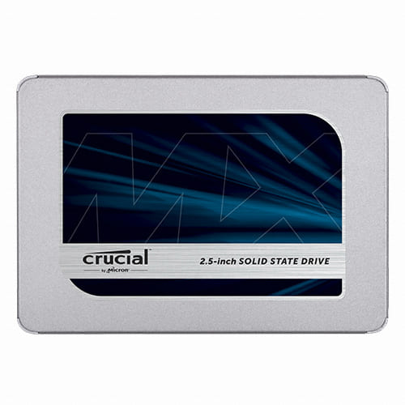

예산 및 주로 하는 게임 설정
첫 화면으로 돌아가기
|
|
|||
|
초고속 저장 용량
총 저장 용량
RAM 용량
CPU 성능 점수
55
fps
배플그라운드 성능
|
총액 ₩ 1,234,567 ( ₩ 234,567 남음 ) | ||
| 예산 ₩ 1,345,678 ( 88 % 사용) | |||
|
RAM

컴퓨터가 실행중인 프로그램에 대한 정보를 적어두기 위해 사용하는 메모지 같은 역할을 합니다. 게임 성능에는 큰 영향을 주지 않지만, 가득 찰 경우 급격히 느려지고 넘치게 되면 게임이 팅길 수 있습니다. 용량이 클수록 동시에 더 많은 게임과 프로그램들을 실행할 수 있습니다.
RAM 용량 옵션
저장장치

사용자 데이터를 저장하는 공간으로, 하드디스크와 초고속 저장장치인 SSD가 있습니다. 용량이 크지만 느린 하드디스크에는 가끔 사용하는 게임과 프로그램, 음악, 동영상, 사진 등을 저장하고, 빠르지만 작고 비싼 SSD에는 윈도우, 자주 사용하는 게임과 프로그램들을 저장하여 빠르게 실행할 수 있습니다. 현재 사용중인 컴퓨터의 저장장치 용량, 주로 하는 게임의 개수와 용량을 확인해 보세요.
저장장치 용량 옵션
|
|
|
성능
프레임이란 화면에 띄워지는 정지 화면 한장을 말합니다. 보통 게임 에서는 초당 보여주는 프레임수 (fps) 를 줄여서 프레임이라고 말하기도 하며 CPU나 GPU가 복잡한 연산을 하면 프레임 수치가 떨어질 수도 있습니다. 여기서는 프레임 수치가 떨어질 때 가장 낮은 수치를 표시합니다.
|